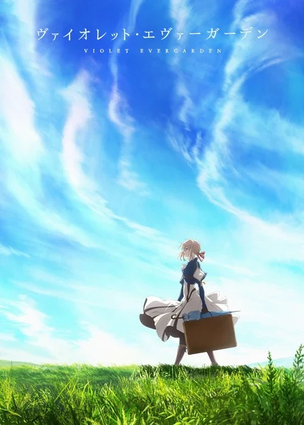
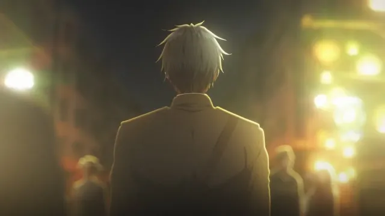
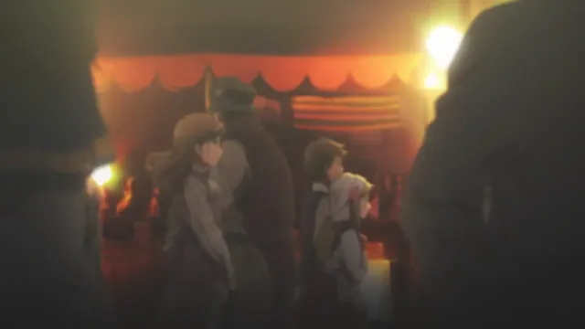
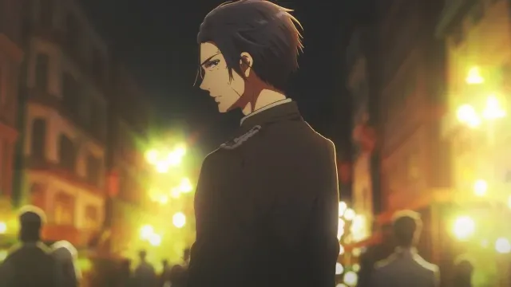
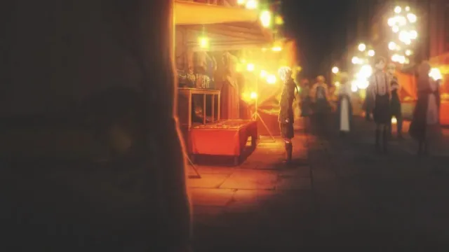

Вайолет Эвергарден

| Тип | Сериал |
| Эпизоды | 13 |
| Жанры | Драма |
| Первоисточник | Легкая новелла |
| Сезон | Зима 2018 |
| Статус | Вышел |
| Выпуск | с 11 января 2018 по 5 апреля 2018 |
| Рейтинг | PG-13 |
| Возраст | 16+ |
| Длительность | 24 мин. ~ серия |
| Студия | Kyoto Animation |
| Озвучка | AniDUB, AniLibria, AniFilm, SHIZA Project, AnimeVost, AniStar, KANSAI, AnimeJet, KBK |
| Режиссер | Таити Исидатэ |
| Автор оригинала | Кана Акацуки |
| Главные герои | Вайолет Эвергарден (Юи Исикава) |
Супруга ученого Орланда – талантливая писательница, выпускающая романы. Однако для того, чтобы соответствовать статусу гениального творца, не достаточно владеть безграничной фантазией, так как все свои мысли автор обязан переносить на бумагу. Наступил момент, когда в дом профессора пришла настоящая трагедия – жена ослепла, и соответственно утратила возможность заниматься писательской деятельностью. Тогда её муж решил создать уникальное изобретение, которое перевернуло всю жизнь женщины, а потом и других граждан. Мужчина представил публике свое детище под названием «автозаписывающая кукла». Робот был наделен функцией, с помощью которой производилась автоматическая запись человеческих слов.
Особенные киборги вскоре обрели невероятную популярность у горожан, страдающих от трудностей со зрением. В определенный день изобретатель приобрел патент на собственное открытие и аналогичных куколок начали выпускать не только с мирной целью. Они пригодились даже в военной области. Одним из таких новоиспеченных роботов была Вайолет Эвергарден. Изначально она служила в войсках, а отныне трудится в гражданской сфере, периодически вспоминая о боевом прошлом.
Кадры



